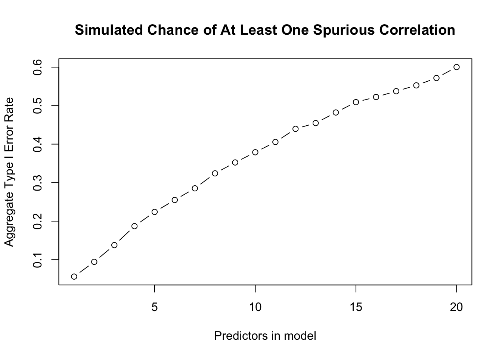
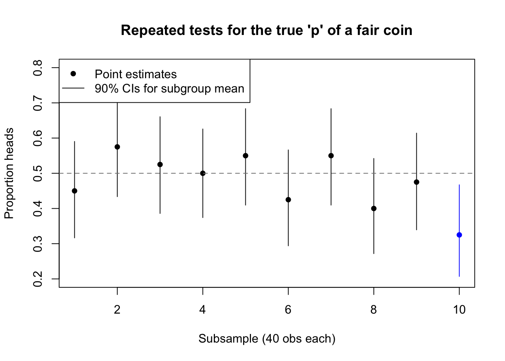

The very simplest forms of model selection involve decisions to keep or remove one or all of the terms already found in the model. Let’s consider our available analytical tools and how they might help or mislead us.
For the rest of this section, I will refer to a regression performed on a small dataset of different car models, available in R as mtcars. Specifically, I will examine a model which explains car fuel efficiency (in miles per gallon, or mpg) as a function of three numeric predictors (horsepower, weight, and engine displacement) as well as a three-level categorical predictor of the engine cylinders (four, six, or eight).1 The functional form of this model would be:
Call:
lm(formula = mpg ~ hp + wt + disp + cyl, data = mtcars)
Residuals:
Min 1Q Median 3Q Max
-4.2740 -1.0349 -0.3831 0.9810 5.4192
Coefficients:
Estimate Std. Error t value Pr(>|t|)
(Intercept) 36.002405 2.130726 16.897 1.54e-15 ***
hp -0.023517 0.012216 -1.925 0.06523 .
wt -3.428626 1.055455 -3.248 0.00319 **
disp 0.004199 0.012917 0.325 0.74774
cyl6 -3.466011 1.462979 -2.369 0.02554 *
cyl8 -3.753227 2.813996 -1.334 0.19385
---
Signif. codes: 0 '***' 0.001 '**' 0.01 '*' 0.05 '.' 0.1 ' ' 1
Residual standard error: 2.482 on 26 degrees of freedom
Multiple R-squared: 0.8578, Adjusted R-squared: 0.8305
F-statistic: 31.37 on 5 and 26 DF, p-value: 3.18e-10
Assessing a linear numeric predictor
Please recall that the t-values and p-values printed above describe the results of a t-test for whether each true beta might really be zero. If any of the true betas \(\beta_j\) were zero, then the predictor \(X_j\) would not belong in the model, since any prediction \(\hat{y}\) would be the same no matter what value \(X_j\) assumed. So when the true beta could reasonably be zero, we generally choose to remove it.
Another way to think about this idea: in cases where the true beta could reasonably be zero, it could also reasonably be slightly negative or slightly positive. Statisticians find it risky to include a predictor when we cannot even be sure whether it causes the response variable to increase or decrease!
Therefore, our first tool for model selection is to simply to consider our linear, numeric predictors one at a time, and remove them if they cannot be found significantly different than zero (at a significance threshold of our choosing) or keep them if they are found to be significant. This tool is both the easiest and the least sophisticated method we will learn.
Applying this reasoning to the car model above, and adopting a significance threshold of \(\alpha = 0.05\), we would remove horsepower (\(p = 0.065\)) and displacement (\(p = 0.748\)), keeping weight (\(p = 0.003\)) and the two cylinder dummy variables, since these last are factors and not linear numeric predictors.2
However, we should be careful with this method, as it is a blunt tool and prone to error. The true relationships between predictors and the response variable sometimes only emerge with the proper control variables present in the model. In other instances, adding a confounding variable will distort or mask the true explanatory effect of another predictor. For example, we know there is a real-world connection between the removed predictors (horsepower and displacement) and the response variable (fuel efficiency). Larger, more powerful engines are generally less fuel-efficient. This is not a simple data trend but a fact, a causal statement based in rigid physical laws.
This method can also be fooled by the issue of multiple comparisons, in which we simultaneously conduct many hypothesis tests at the same time. Even though each individual test result has no more than an \(\alpha\) Type I error rate, if we examine enough test results at a time we become quite likely to wrongly include a “significant” predictor in the model when it has no true explanatory power. We saw an example of this earlier when discussing spurious correlation, and focusing on individual predictor p-values will make this risk real. What’s more, the risk increases with every predictor in the model:
Code
set.seed(1776)sim.false.p <-function(k,nobs=100,nsim=10000,alpha=0.05){ dat <-array(rnorm((k+1)*nobs*nsim),c(nobs,k+1,nsim)) sims <-apply(dat,3,function(z) min(summary(lm(z[,1]~z[,-1]))$coefficients[-1,4])<alpha)return(mean(sims))}t1.rates <-sapply(1:20,sim.false.p) #will take timeplot(1:20,t1.rates,type='b',xlab='Predictors in model',ylab='Aggregate Type I Error Rate',main='Simulated Chance of At Least One Spurious Correlation')

Multiple comparisons issues grow as more predictors enter the model
The response variable, errors, and predictors used to create the figure are all uncorrelated standard normal variates, and the significance threshold used was \(\alpha = 0.05\). Real-world situations would create slightly different patterns, but the lesson remains the same: examining every line of a multiple comparison invites an added risk of Type I errors which might far exceed our theoretical threshold \(\alpha\).
Assessing a categorical predictor
We can’t apply this same approach to categorical predictors, because each categorical predictor generates several 1/0 indicator variables which all enter or leave the model at the same time. Furthermore, the significance of each indicator variable does not imply that the corresponding group is useful or necessary—these tests only describe differences between each group and the reference level. If the reference level happens to be the only outlier group, betas for the other groups will seem “significant” because they are far from the reference level, even if they all are identical to each other.
Consider again the table of parameter coefficients shown before, where cylinder entered as a categorical predictor. Let’s isolate the two dummy variables corresponding to cylinder count:
summary(carlm)$coefficients[5:6,]
Estimate Std. Error t value Pr(>|t|)
cyl6 -3.466011 1.462979 -2.369146 0.02553904
cyl8 -3.753227 2.813996 -1.333771 0.19384581
From this table we notice that cars with 6-cylinder engines have roughly 3.466 mpg worse fuel efficiency than cars with 4-cylinder engines (the reference level), and that this difference is statistically significant. But notice that 8-cylinder engine cars have even worse fuel efficiency, yet this difference isn’t statistically significant!3 What are we to conclude?
In these situations we can rely on the same F-test introduced earlier in Revisiting ANOVA, when we examined models which only included a single factor. Now our model space contains both a factor as well as some linear predictors. We can use an ANOVA test to isolate the additional model sum of squares due to the factor and test whether adding its two extra parameters was worth the small gain in explanatory power. Software packages would display the test something like so:
anova(carlm)
Analysis of Variance Table
Response: mpg
Df Sum Sq Mean Sq F value Pr(>F)
hp 1 678.37 678.37 110.1482 7.677e-11 ***
wt 1 252.63 252.63 41.0193 8.741e-07 ***
disp 1 0.06 0.06 0.0093 0.92404
cyl 2 34.86 17.43 2.8304 0.07724 .
Residuals 26 160.13 6.16
---
Signif. codes: 0 '***' 0.001 '**' 0.01 '*' 0.05 '.' 0.1 ' ' 1
The logic behind the table is the same as the F-test introduced earlier: a model which fits separate group means for 4-, 6-, and 8-cylinder cars does not seem supported by the data. While the groups do differentiate themselves somewhat, when considered as a whole we do not see greater explanatory power than we would expect by chance alone.
We should note that the ANOVA line for cyl (cylinder) benchmarks this predictor’s contributions against a model which already contains the other predictors; if we were to consider cyl all on its own, it would be found highly significant. ANOVA tables such as this are dependent upon the order in which predictors enter the model; each new line conducts a test of whether the new term is helpful to a model which already includes all the previous predictors.
This conclusion hints at another type of multiple comparison problem. When a factor contains many levels, we should not be surprised when the sample averages of some groups seem significantly far from the sample averages of other groups. These significant differences do not always imply a real-world value to the grouping variable.
As an illustration, consider flipping a perfectly fair coin 400 times, recording the result of each flip. After all the flips are done, we could retroactively create a factor variable which groups the first 40 flips, the second 40 flips, and so on until the tenth and last 40 flips. Sometimes, the chance behavior of the coin will make the “groups” look different, even though they were chosen arbitrarily and all share exactly the same generating process:
Code
set.seed(1066)coin.groups <-sample(0:1,size=400,replace=TRUE)coin.groups.means <-tapply(coin.groups,rep(1:10,each=40),mean)coin.groups.lower <-tapply(coin.groups,rep(1:10,each=40),function(z){prop.test(sum(z),length(z),p=0.5,conf.level=0.9)$conf.int[[1]]})coin.groups.upper <-tapply(coin.groups,rep(1:10,each=40),function(z){prop.test(sum(z),length(z),p=0.5,conf.level=0.9)$conf.int[[2]]})plot(1:10,coin.groups.means,ylim=c(0.2,0.8),xlab='Subsample (40 obs each)',ylab='Proportion heads',main="Repeated tests for the true 'p' of a fair coin",pch=16,col=rep(c('black','#0000ff'),times=c(9,1)))segments(x0=1:10,y0=coin.groups.lower,y1=coin.groups.upper,col=rep(c('black','#0000ff'),times=c(9,1)))abline(h=0.5,lty=2,col='grey50')legend(x='topleft',pch=c(16,NA),lty=c(NA,1),legend=c('Point estimates','90% CIs for subgroup mean'))

False suggestion of between-group differences caused by random variation
In the diagram above, the tenth “group” might fail a hypothesis test to confirm that its true proportion of heads was 50%. But of course the “groups” are fictional and do not code for real differences between the flips.
The danger we face as modelers is that the world is full of real groups which nonetheless do not provide useful information on our response variable. Cylinder counts are a very real grouping variable for car models, but that doesn’t mean the predictor is helpful in explaining fuel efficiency, at least not when related variables such as horsepower, weight, and displacement are accounted for. The more factors we add, and the more levels they contain, the greater the risk of falsely finding differences between groups.
Note that this predictor is measured numerically but makes more sense as a categorical variable!↩︎
As we saw in the previous section, a significant factor coefficient merely establishes a significant difference from the reference level;it does not necessarily mean the entire factor belongs in the model.↩︎
This seeming paradox is caused by the small number of 8-cylinder cars in the data, making the standard error of their group effect much larger than that of the 6-cylinder cars.↩︎